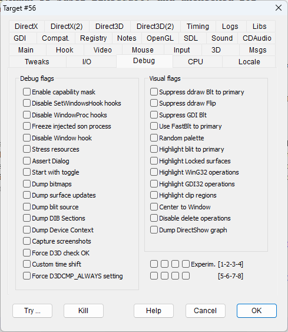

|
Enable capability mask |
CAPMASK |
|
|
Disable SetWindowsHook hooks |
DISABLEWINHOOK |
When an early hook mode is selected, DxWnd still adds a second late hook based on the SetWindowsHook function just as a precaution. This flag disables the additional late hook to reveal possible failures in the early hook. |
|
Disable WindowProc hooks |
DISABLEWINHOOKS |
Bypasses any Windows hook that the target program may issue internally. |
|
Freeze injected son process |
FREEZEINJECTEDSON |
|
|
Disable Window hook |
NOWINDOWHOOKS |
Does not intercept the window callback routines |
|
Stress resources |
STRESSRESOURCES |
|
|
Assert Dialog |
ASSERTDIALOG |
|
|
Start with toggle |
STARTWITHTOGGLE |
Initializes custom key toggle to active status. Checking this flag will turn on all flagged Dump functions from the start of hook with no need to press the custom key toggle. |
|
Dump bitmaps |
DUMPBITMAP |
Debug utility to make images of HBITMAP resources in "bmp.out" game folder. |
|
Dump surface updates |
DUMPSURFACES |
Debug utility to dump all updated ddraw surfaces in bmp format on the "surface.out" folder. |
|
Dump blit source |
DUMPBLITSRC |
Debug utility to dump all sources of blit operations to ddraw surfaces in bmp format on the "surface.out" folder. |
|
Dump DIB Sections |
DUMPDIBSECTION |
Debug utility to make images of DIB resources in "bmp.out" game folder. Note: Images of DIBs with negative height will be upside down. |
|
Dump Device Context |
DUMPDEVCONTEXT |
|
|
Capture screenshots |
CAPTURESCREENS |
|
|
Force D3D check OK screenshots |
FORCED3DCHECKOK |
Forces a positive checks for all D3D Check* methods |
|
Custom time shift |
CUSTOMTIMESHIFT |
Allows to define a custom timeshift factor. At the moment, the custom value must be edited adding a "[Debug]" section in the dxwnd.ini file and setting a key "timeshift" with a floating value that represents the custom timeshift ratio. |
|
Force D3DCMP_ALWAYS setting |
ZBUFFERALWAYS |
|
|
Suppress ddraw Blt to primary |
NODDRAWBLT |
|
|
Suppress ddraw Flip |
NODDRAWFLIP |
|
|
Suppress GDI Blt |
NOGDIBLT |
|
|
Use FastBlt to primary |
DOFASTBLT |
|
|
Random palette |
FIXRANDOMPALETTE |
Ignores the DirectDraw palette directive and set a fixed palette with random colors. |
|
Highlight blit to primary |
MARKBLIT |
|
|
Highlight Locked surfaces |
MARKLOCK |
|
|
Highlight WinG32 operations |
MARKWING32 |
Highlight WinG32 operations by drawing a colored line all around the rectangular area that is the target of the operation: red: WinGStretchBlt green:WinGBitBlt |
|
Highlight GDI32 operations |
MARKGDI32 |
Highlight GDI32 operations by drawing a colored line all around the rectangular area that is the target of the operation: light-blue: StretchBlt yellow: PatBlt magenta: StretchDIBits white: SetDIBits, SetDIBitsToDevice, TransparentBlt blue: BitBlt red: DrawIcon |
|
Highlight clip regions |
MARKCLIPRGN |
|
|
Center to Window |
CENTERTOWIN |
|
|
Disable delete operations |
DISABLEDELETE |
Prevents file delete operations. |
|
Dump DirectShow graph |
DUMPDSHOWGRAPH |
Creates DirectShow graph files in the program folder. The graph file can be viewed and played using tools like GraphEdit. |
|
Experim. [1 - 8] |
EXPERIMENTALn |
A set of 8 flags available to test specific experimental features temporarily and waiting to be transferred to regular flags or deleted. |